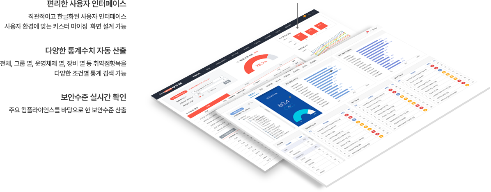

UVM 상세특징
취약점 점검도구의 단순한 운영으로부터 탈피하여 획기적으로
향상된 관리적 취약점분석 업무체계를 구축할 수 있습니다.
-
원격 취약점 점검도구 콘솔운영
웹 GUI 상에서 취약점 점검 Agent 명령 수행 (콘솔 기능 일부 수행)
-
체계적인 자산관리 가능
기업 내 시스템, 네트워크 장비 및 PC 등의 자산을 체계적으로 관리
-
사용자 이용에 관한 보안 강화
사용자 권한관리 및 진단결과 이력관리 기능 제공
(최고 관리자, 보안 관리자, 자산 관리자, 일반 사용자) -
보안취약점 점검도구와 연계운영
시스템 점검도구(SSE), 네트워크 점검도구(NSE), 웹 어플리케이션 점검도구(WSE) 및 타사 취약점 점검도구 점검결과 연계 운영
-
보안취약점 관리업무의 중앙 집중화
보안취약점 점검, 조치, 결과의 조회 관리업무를 중앙관리 및 점검통계
-
보안취약점 관리업무의 워크플로우 운영
점검요청, 결과조회, 조치요청, 조치이행, 취약점문의 및 답변처리 업무운영

UVM 구성
UVM 기능 및 구성
| 구분 | 설명 |
|---|---|
|
취약점 점검수행 |
|
|
취약점 점검이력 |
|
|
취약점 점검통계 |
|
|
취약점 조치이행 |
|
|
환경설정 |
|
|
취약점 정보센터 |
|
|
원격진단 콘솔 |
|
|
취약점 보고서 |
|
|
메일발송, 업데이트 |
|
|
제외취약점 관리 |
|
나일소프트 제품이 궁금하시다고요?
편하신 방법을 선택을 주세요. 자세히 답변드리겠습니다!
제품 문의 및 상담
바로가기
- E-mail : nileman@nilesoft.co.kr
- Tel : 02-783-0961